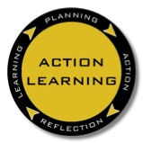

Each Kusasa project entails planning, action and reflection in order to achieve deep and memorable learning. While some schools today are generally more open to action learning activities, the vital component of reflection is often left out. Yet reflecting on experience is the key to effective learning.
Learners should keep a project journal to encourage reflect on their Kusasa experiences:
- Newly-acquired thinking skills
- Mathematical thinking
- Modelling and visualising skills
- Squeak skills
- Debugging challenges
- Reflection skills
- And more
The Kusasa project journal is a tool designed to encourage thinking about thinking or "metacognition", to develop the disposition to think more analytically and creatively, and to build learners' intellectual self-esteem.